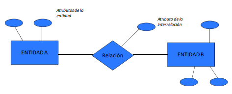

𝘉𝘈𝘚𝘌 𝘋𝘌 𝘋𝘈𝘛𝘖𝘚 𝘠 𝘋𝘐𝘈𝘎𝘙𝘈𝘔𝘈 𝘌𝘕𝘛𝘐𝘋𝘈𝘋 𝘠 𝘓𝘈 𝘙𝘌𝘓𝘈𝘊𝘐Ó𝘕
1- ¿Qué es una base de datos?
Una base de datos es un sistema digital que permite almacenar, organizar, gestionar y recuperar grandes volúmenes de información de manera estructurada y eficiente. Actúa como un contenedor electrónico donde los datos (palabras, números, imágenes) se estructuran para facilitar su acceso, actualización y análisis, a menudo utilizando un Sistema de Gestión de Bases de Datos (DBMS).
2- ¿Para qué sirve una base de datos?
Una base de datos sirve para almacenar, organizar, gestionar y recuperar grandes volúmenes de información de forma sistemática, segura y rápida. Permite a empresas y aplicaciones estructurar datos en tablas (filas/columnas) para consultarlos, modificarlos o eliminarlos fácilmente, mejorando la eficiencia operativa y facilitando la toma de decisiones basada en datos.
3- ¿Qué es un CRUD?
CRUD es un acrónimo en programación para Crear, Leer, Actualizar y Eliminar (Create, Read, Update, Delete). Representa las cuatro operaciones fundamentales para gestionar el almacenamiento persistente de datos en aplicaciones y bases de datos, permitiendo crear, consultar, modificar y borrar registros de información
4-¿Qué es un campo?
Un campo en una base de datos es la unidad básica de información, representando una columna en una tabla que almacena un tipo de dato específico (como nombre, edad o fecha) para todos los registros. Define la estructura y el tipo de dato, permitiendo organizar, validar y gestionar información de manera eficiente
5- ¿Qué es un registro?
Un registro en una base de datos es una fila en una tabla que contiene información sobre un objeto o entidad específica. Cada registro está compuesto por campos que almacenan diferentes tipos de datos, permitiendo representar y gestionar información detallada sobre cada elemento en la base de datos.
6- ¿Qué es un dato?
Un dato en una base de datos es una unidad de información básica que representa un valor específico, como un número, texto o fecha. Los datos son los elementos fundamentales que se almacenan y manipulan en una base de datos para ser procesados y utilizados por aplicaciones y usuarios.
7- ¿Qué es un diagrama entidad-relación?
Un diagrama entidad-relación (DER o ERD) es una herramienta visual que representa la estructura de una base de datos, mostrando entidades (objetos/conceptos), sus atributos (características) y cómo se interrelacionan entre sí. Actúa como un plano conceptual que facilita el diseño, optimización y entendimiento de los datos en sistemas de información.
8- Ejemplo básico de un diagrama entidad-relación, explicalo en un parrafo

Es una herramienta visual que utiliza símbolos para mostrar de forma más clara y comprensible la estructura de una base de datos.
𝚛𝚘𝚗𝚊𝚕𝚍 𝚜𝚝𝚎𝚟𝚎𝚗 𝚣𝚊𝚙𝚊𝚝𝚊 𝚐𝚊𝚕𝚕𝚎𝚐𝚘 𝟷𝟷-𝟸